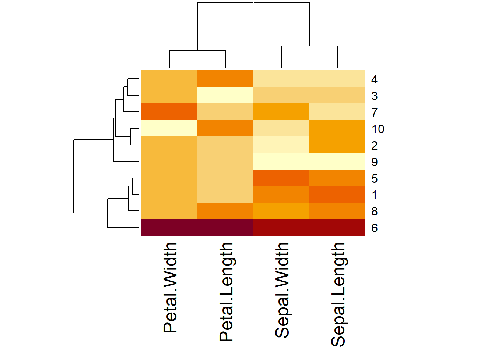

Chapter 3 Data structures
Learning objectives:
- Understand basic concepts of R programming, including functions and data objects.
- Learn to seek help within R and utilize Google for programming queries.
- Get familiar with common data objects such as scalars, vectors, lists, data frames, and matrices.
R scripts are a mix of function calls and data handling. There’s a buffet of data structures in R, including scalars, vectors, factors, matrices, factors, data frames, and lists. These structures can store one or more individual data elements of various types, such as numeric (e.g. 2.5), character (e.g. “Go Jacks”), or logical (e.e. TRUE or FALSE).
3.1 Basic concepts
3.1.1 Expressions
In R, just type a command and watch the magic happen! For instance:
## [1] 2Here’s your result, ‘2’. It’s printed on the console right after your entry.
Now enter the string “Go Jacks”. (quotes are a must!)
## [1] "Go Jacks"::: {.exercise #unnamed-chunk-88}
Multiply 45.6 by 78.9 and see what R computes. :::
3.1.2 Logical Values
R can yield logical values TRUE or FALSE , known as “Boolean” values in many languages. Let’s try an expression that gives us a logical value:
## [1] TRUEAnd another logical value:
## [1] FALSENote that you need a double-equal sign to check whether two values are equal - a single-equal sign won’t work.
3.1.3 Variables
You can store values in variables for future use, just like in other languages. Type x = 42 to keep 42 in x. x is a scalar that contains only one data element.
Alternatively, use this conventional and safer syntax for assignment:
This is the recommended way of assignment, according to the Google R style Guide, although x = 42 generally works fine.
Once assigned, x is ready for action. Have fun with x to divide, log, square, or use it in a logical operation.
## [1] 21## [1] 3.73767## [1] 1764## [1] 6.480741## [1] TRUEYou can re-assign any value to a variable at any time. Try assigning “Go Jacks!” to x.
To peek into the variable’s value, just type its name:
## [1] "Go Jacks!"Switching to a logical value? No problem! Assign TRUE to x:
You can store multiple values in a variable or object called vector, or matrix and data frame, which are tables with rows and columns, like an Excel spreadsheet. These will be explained later.
3.1.4 Functions
Functions are fundamental building blocks of R. Most of the times when we run R commands, we are calling and executing functions. You can call a function by its name, followed by one or more arguments in parenthesis. Let’s use the sum function to add up a few numbers:
## [1] 9Save a function’s result to a variable:
## [1] 9Some arguments have “names”. For example, to repeat a value 3 times, you would call the rep function and provide it to times argument:
## [1] "Yo ho!" "Yo ho!" "Yo ho!"::: {.exercise #unnamed-chunk-100}
For vector x <- c(12, 56, 31, -5, 7):
a. Calculate the mean of all elements in x and assign it to y.
b. Square each element in x and assign the results to a new vector z.
:::
::: {.exercise #unnamed-chunk-101}
Use Google to find functions for setting and getting the current working directory, respectively. :::
::: {.exercise #unnamed-chunk-102}
Discover the function that lists all the files in the current working folder. :::
Reusing code efficiently can be achieved by wrapping it in a function, clearly defining the input and the output. Tested and documented R functions are often available as R packages. You can also define your own functions, which will be discussed later.
3.1.5 Seeking help and example Code
To find help in R, use the help command. For instance, to learn about the sum function, type:
A helpful document will pop up in the Help Window. See the Figure 3.1.

Figure 3.1: Help formation on the ‘sum’ function.
Scroll to the bottom of the help page to find example code, as shown in Figure 3.2.

Figure 3.2: Code examples using ‘sum’ function.
The quickest way to grasp an R function is by playing around with these example codes, observing the inputs and outputs. Feel free to copy, paste, and modify these examples for your analysis needs.
example() brings up usage examples for the given function. Try it for the ‘min’ function:
##
## min> require(stats); require(graphics)
##
## min> min(5:1, pi) #-> one number
## [1] 1
##
## min> pmin(5:1, pi) #-> 5 numbers
## [1] 3.141593 3.141593 3.000000 2.000000 1.000000
##
## min> x <- sort(rnorm(100)); cH <- 1.35
##
## min> pmin(cH, quantile(x)) # no names
## [1] -2.21172654 -0.84536856 0.02474012 0.91307143 1.35000000
##
## min> pmin(quantile(x), cH) # has names
## 0% 25% 50% 75% 100%
## -2.21172654 -0.84536856 0.02474012 0.91307143 1.35000000
##
## min> plot(x, pmin(cH, pmax(-cH, x)), type = "b", main = "Huber's function")##
## min> cut01 <- function(x) pmax(pmin(x, 1), 0)
##
## min> curve( x^2 - 1/4, -1.4, 1.5, col = 2)##
## min> curve(cut01(x^2 - 1/4), col = "blue", add = TRUE, n = 500)
##
## min> ## pmax(), pmin() preserve attributes of *first* argument
## min> D <- diag(x = (3:1)/4) ; n0 <- numeric()
##
## min> stopifnot(identical(D, cut01(D) ),
## min+ identical(n0, cut01(n0)),
## min+ identical(n0, cut01(NULL)),
## min+ identical(n0, pmax(3:1, n0, 2)),
## min+ identical(n0, pmax(n0, 4)))Here’s a quick demonstration:
## [1] 1Example commands and plots will show up automatically by pressing ‘Return’ in RStudio. In R, you’ll need to manually click on the plots to view them.
Google is a surprisingly patient teacher for R-related queries, forgiving typos, grammar errors, and different notations. Most of your questions (99 %) have been asked and answered on various forums. Many R gurus share their wisdom on web sites like** stackoverflow.com**, providing answers with example codes! You can also use Google as a reference.
Remember, it is important to add comments to your code. Everything after the “#” will be ignored by R during execution. Since we often recycle and re-purpose our codes, these comments are our breadcrumbs through the forest of code, helping us remember our intentions.
## [1] 53.2 Data structures
3.2.1 Vectors
A vector is an object that holds a sequence of values of the same type, such as numbers, strings, logical values, or any other type, as long as they’re all the same type. They can come from a column of a data frame too. Here’s how you create a vector x:
## [1] 5 2 22 11 5The c here stands for concatenate. Treat it with respect and avoid using it as a variable name; it’s much too valuable for that!
Vectors can not contain values with different modes (types). Try a motley crew with mixing modes and see what happens:
## [1] "1" "TRUE" "three"The result? All values get converted to ‘characters’, the universal diplomat of data types, to coexist peacefully in the vector. To hold diverse types of values, you will need a list, which is explained later in this chapter.
For a vector with a sequence of numbers, use start:end notation, which is often used in loops and operations on the indices of vectors, etc. Let’s create a vector with values from 5 through 9:
## [1] 5 6 7 8 9The seq function offers more flexibility for creating sequences. Here is the basic seq():
## [1] 5 6 7 8 9seq also allows you to use increments other than 1. Try it with step of 0.5:
## [1] 5.0 5.5 6.0 6.5 7.0 7.5 8.0 8.5 9.0Create a sequence from 5 to 9 with length 15:
## [1] 5.000000 5.285714 5.571429 5.857143 6.142857 6.428571 6.714286 7.000000
## [9] 7.285714 7.571429 7.857143 8.142857 8.428571 8.714286 9.000000::: {.exercise #unnamed-chunk-114}
Compute 1+2+3… +1000 using single line of R code. Hint: check the example code for sum( ) function in the R help document. :::
3.2.1.1 Vectors operations
First let’s find out the 4th element of our vector x <- c(5, 2, 22, 11, 5), or the elements from 2 to 4.
## [1] 11## [1] 2 22 11Creat a new vector y from a segment of x:
No result is returned but you “captured” the result in a new vector y, which holds 3 numbers. You can type y and hit ‘enter’ to see the results.
## [1] 2 22 11Or, combine creation and revelation in one magical line. A semicolon separates multiple commands.
## [1] 2 22 11Now discover the vector length:
## [1] 5It’s also easy to know basic statistics about the vector such as maximum, minimum, sum, mean and median, individually or together. And standard deviation too.
## [1] 22## [1] 2## [1] 45## [1] 9## [1] 5## Min. 1st Qu. Median Mean 3rd Qu. Max.
## 2 5 5 9 11 22## [1] 7.968689rank() function ranks the elements. It plays fair, giving ties an average rank. sort() orders elements either ascending (from the smallest to the biggest) or descending (decreasing = T will make it sort from the biggest to the smallest).
## [1] 2.5 1.0 5.0 4.0 2.5## [1] 2 5 5 11 22## [1] 22 11 5 5 2diff() iterates the differences between adjacent elements of vector x.
## [1] -3 20 -11 -6rev() will reverse the position of the elements in the vector.
## [1] 5 11 22 2 5Operations are performed element by element, like log, sqrt, x^2, etc. They return vectors too.
## [1] 1.6094379 0.6931472 3.0910425 2.3978953 1.6094379## [1] 2.236068 1.414214 4.690416 3.316625 2.236068## [1] 25 4 484 121 25## [1] 11 5 45 23 11Exclude the second element from x and save as y:
## [1] 5 22 11 5Add an element 100 to vector x between its second and the third element:
## [1] 5 2 100 22 11 5The length of the new created x is:
## [1] 6Use the two commands below to add a new element to the end. They generate the same results.
## [1] 5 2 22 11 5 7## [1] 5 2 22 11 5 7Create an empty vector y:
## NULL## [1] 0Here’s how to find unique elements:
## [1] 5 2 22 11And the frequencies of the unique elements:
## x
## 2 5 11 22
## 1 2 1 1To locate the max or min, find a particular value, or satisfy a condition like \(x^2>100\):
## [1] 3## [1] 2## [1] 4## [1] 3 4You can randomly select some elements from the vector. Do you always get the same results if you run the following code more than once? The answer is “No”. Each run is a surprise, like a mini lottery:
## [1] 22 11 2Elements in the vector can have names. Personalize elements with names and type “x” to see the difference.
x <- c(5, 2, 22, 11, 5)
names(x) <- c("David", "Beck", "Zach", "Amy", "John")
x # Now it's a who's who of data!## David Beck Zach Amy John
## 5 2 22 11 5You can refer to the elements by their names now.
## Amy
## 11The any() and all() functions produce logical values. They return if any or all of their arguments are TRUE.
## [1] TRUE## [1] FALSE## [1] TRUE## [1] FALSEWho’s greater than 10 in this vector party?
## [1] FALSE FALSE TRUE TRUE FALSEThere are multiple methods to get a subset from a vector. Here are some examples:
## [1] NA 2 -4 NA 9 -1 5## [1] NA -4 NA -1Vectors x and y contain annoying NA values, which can be removed using is.na() function.
y <- y[!is.na(y)] # Remove all NAs in y. Or equivalently, keep all NOT NAs in y.
# The exclamation '!' means NOT.
y## [1] -4 -1Now the updated variable y contains only numerical values. All NAs have been removed. To assign the “cleaned” vector to a different variable z:
## [1] -4 -1Alternatively, you can use the subset() function to get a “clean” data without NAs. For example:
## [1] -4 -1Let’s peek into the function is.na(), which checks if a vector contains NA or not. Note that the result is a vector holding logical values. Do we have missing values in the vector x?
## [1] TRUE FALSE FALSE TRUE FALSE FALSE FALSEIn R, NA represents missing or unavailable values, like a placeholder for “I don’t know.”
Consider the case where a given value isn’t available in the data set. Unlike simply omitting values, NA explicitly indicates unavailability. This distinction is important for accurate data analysis. Many functions that work with vectors treat these values specially. For instance, the sum of x might not be straightforward due to NAs:
## [1] NAThe result NA is considered “not available” because one of the vector’s values is NA. R is responsible; It won’t just blithely add up the numbers without warning you about the incomplete data. However, you can explicitly tell sum (and many other functions) to remove NA values before R starts the calculations.
Let’s find how sum function handles NAs:
As you see in the documentation, sum has an na.rm parameter to handle NA values. The optional argument na.rm is set to FALSE by default, but if you set it to TRUE, all NAs will be removed from the vector before the calculation is performed. In other words, you can use the argument na.rm = T or na.rm = TRUE to ignore all NAs during calculations.
## [1] 11::: {.exercise #unnamed-chunk-146}
For vector var1 <- c(NA, 334, 566, 319, NA, -307).
- Create a new vector var2 by removing all NAs from var1.
- Calculate the mean of var1, ignoring the NAs. :::
To illustrate the difference between NULL and NA, let’s experiment with vec.x:
# Build up vec.x with numbers greater than 10 in the vector
vec.x <- c(40, 3, 11, 0, 9)
z1 <- NULL
for (i in vec.x) {
if (i > 10) z1 <- c(z1, i)
}
z1## [1] 40 11## [1] 2# Build up vec.x with numbers greater than 10 in the vector
vec.x <- c(40, 3, 11, 0, 9)
z2 <- NA
for (i in vec.x) {
if (i > 10) z2 <- c(z2, i)
}
z2## [1] NA 40 11## [1] 3The length of z1 and z2 reveals that the NULL is counted as nonexistent like the invisible man, while NA is a missing value, taking up space.
Vectors in R are like the ingredients in a recipe – mix them right, you’ll create data-analysis delicacies. Let’s peek the operation between a vector and a scalar.
## [1] 2 5 9 10 11As you can see, 1 is added to each element in x. The operation is equivalent adding a vector of ones to x:
## [1] 2 5 9 10 11The operation between vectors with the same length is element-wise. For example:
# Two vectors with the same length
x <- c(1, 4, 8, 9, 10)
y <- c(1, 2, 0, 3, 15)
x + y # Element-wise addition## [1] 2 6 8 12 25## [1] 1 8 0 27 150If vectors have different length, R will automatically recycle the shorter one, until it has the same length as the longer one. For example:
## [1] 2 6 9 11 11y was recycled. Here’s what R is really doing:
## [1] 2 6 9 11 11ifelse() function allows you to choose elements conditionally. Its structure is ifelse(test, yes, no). The yes or no depends on whether the test is true or false. Let’s see it in action:
## [1] "Positive" "Negative" "Positive" "Negative" "Negative" "Positive"In this example, the elements in y are either ‘positive’ or ‘negative’, based on whether elements in x are greater or less than 0.
Another twist with ifelse():
## [1] 7 9 6 3 2Here in this case, if an element in x is less than 0 (if x is negative), y takes the absolute value of the element. Otherwise (if x is positive or zero), multiply the element by 2 then add 1 for y.
::: {.exercise #unnamed-chunk-156}
Randomly select 10 integers from 1 to 100 using sample selection function. Create a vector y which satisfies the following conditions: if an selected integer is an even number, y is ‘even’, otherwise y returns ‘odd’. :::
To find where elements of one vector appear in another, use the match() function:
x <- c(5, 5, 22, 11, 3)
y <- c(5, 11, 8)
z <- match(y, x) # Where do y's elements show up in x?
z # Unveil the positions## [1] 1 4 NAThe elements 5 and 8 in y locate at the first and fourth position of x respectively. The function ignores the duplicated 5 which locates at the second position of x. The last element 8 in y is not found in x, which returns an “NA”.
3.2.1.2 An example of vector usage
Image a fishing Journey where Tom, Jerry, and Mickey went fishing and caught 7, 3, and 9 fishes, respectively, shown in a vector:
## [1] 7 3 9The c() function creates a new vector by combining a set of values. Give it a name if we want to use it later:
## [1] 7 3 9fishes is a vector with 3 elements. Many functions can be used to operate on this vector. Let’s start with a bar plot:
Compute the total catch:
## [1] 19To access the individual elements by indices:
## [1] 9::: {.exercise #unnamed-chunk-163}
Did Mickey catch more fishes than Tom and Jerry combined? Find out the answer using the fishes vector and return a TRUE or FALSE value. :::
Jerry protested that, per minimum size fishing rules, a ¼ inch long fish he caught and released was not counted in properly. So add one more to Jerry’s catch by changing the value in the 2nd element:
## [1] 7 4 9Add an 1 to the current value of the 2nd element of 3, the result of 4 is assigned back to the 2nd element itself. As a result, the 2nd element is increased by 1. This is not a math equation, but a value assignment operation. More rigorously, we should write this using <-.
We can also directly overwrite the values.
## [1] 7 4 9Now they started a camp fire, and each ate 1 fish for dinner. The left fishes after dinner:
## [1] 6 3 8R subtracts 1 from each individual element. Most arithmetic operations work just as well on vectors as they do on single values. If you add a scalar (a single value) to a vector, the scalar will be added to each value in the vector, returning a new vector with the results.
Then, something bad happened in the fishing journey: While they are sleeping in their camping site, a fox stole 3 fishes from Jerry’s bucket, and 4 fishes from Mickey’s bucket. How many fishes were left now?
## [1] 6 0 4If you add or subtract two vectors of the same length, R will take the corresponding elements from each vector and add or subtract them. The 0 is necessary to keep the same vector length.
Proud of himself, Mickey wanted to make a 5ft x 5ft poster to show himself the best fisherman. Knowing that a picture is worth a thousand words, he learned R and started plotting, trying to put his name on the plots. The data elements in a vector can have names or labels for a more personalized touch:
The right side is a vector, holding 3 character values. These values are assigned as the names of the 3 elements in the fishes vector. names() is a built-in function. Visualize the vector:
## Tom Jerry Mickey
## 7 4 9
Figure 3.3: Simple Bar plot
Assigning names for a vector also enables you to use labels to access each element. Try getting the value for Jerry:
## Jerry
## 4::: {.exercise #unnamed-chunk-171}
Assign the value ‘Ten’ to Tom using his name rather than the index in the fishes vector. :::
Tom proposes ambitiously that the goal for the next fishing trip is to double their catches.
## Tom Jerry Mickey
## 14 8 18Hopelessly optimistic, Jerry proposed that next time each should “square” their catches, so that together they might feed the entire school.
## [1] 146Note that two operations are nested. You can obviously do it in two steps.
::: {.exercise #unnamed-chunk-174}
Create a vector representing the prices of groceries: bread $2.5, milk $3.1, jam $5.3, beer $9.1. And visualize it with a bat plot. :::
3.2.1.3 Scatter Plots of two vectors
The plot function takes two vectors, one for X values and one for Y values, and creates a scatter plot. Let’s explore the relationship between numbers and their square roots.
Then simply call plot with the two vectors:

Great job! Notice that values from the first argument (x) forms the horizontal axis, and values from the second (y) takes the vertical stage.
::: {.exercise #unnamed-chunk-177}
Bring up a vector “x” with 21 integers from -10 to 10, then create a scatter plot showing x^2 against x. :::
3.2.2 Matrices
A matrix is a two-dimensional vector(rows and columns) with two additional attributes: the number of rows(nrow) and the number of columns(ncol). It can only contain one type of values, i.e. numbers, characters, or logical values.
We can create a matrix using rbind or cbind function. rbind combines all rows and cbind combines all columns:
## [,1] [,2] [,3]
## [1,] 3 4 5
## [2,] 10 13 15## [,1] [,2] [,3]
## [1,] 3 10 3
## [2,] 4 13 2
## [3,] 5 15 1## [,1] [,2] [,3]
## [1,] 3 4 5
## [2,] 10 13 15
## [3,] 3 10 3
## [4,] 4 13 2
## [5,] 5 15 1To use rbind() combining matrices by row, the matrices must have the same number of columns. Similar to cbind(), the matrices must have same number of rows to combine by column.
The matrix() function is another way to create matrices:
## [,1] [,2] [,3]
## [1,] 1 5 9
## [2,] 2 6 10
## [3,] 3 7 11
## [4,] 4 8 12The argument seq() create a sequence from 1 to 12, nrow() and ncol() define the number of rows and columns in the matrix, respectively. It’s not necessary to define both nrow() and ncol(). Since if one is provided, the other one is inferred from the length of the data.
## [,1] [,2] [,3]
## [1,] 1 5 9
## [2,] 2 6 10
## [3,] 3 7 11
## [4,] 4 8 12Notice that the matrix is filled in column-wise by default. Add the byrow = TRUE to the argument to fill a matrix by row-wise:
## [,1] [,2] [,3]
## [1,] 1 2 3
## [2,] 4 5 6
## [3,] 7 8 9
## [4,] 10 11 12Also, you can generate a matrix by creating an empty matrix first:
## [,1] [,2] [,3]
## [1,] NA NA NA
## [2,] NA NA NA
## [3,] NA NA NA
## [4,] NA NA NAThen assign values to the empty matrix. For example, assign the value 3 to the position at first row and first column, and value 100 to the position of the second row and third column:
## [,1] [,2] [,3]
## [1,] 3 NA NA
## [2,] NA NA 100
## [3,] NA NA NA
## [4,] NA NA NAA matrix can also be created from a vector by setting its dimensions using function dim().
## [1] 1 5 6 9 8 10 21 15 76## [1] "numeric"## [,1] [,2] [,3]
## [1,] 1 9 21
## [2,] 5 8 15
## [3,] 6 10 76## [1] "matrix" "array"Using as.matrix() function, you can convert a non-matrix data set to a matrix. Take the data iris as an example.
## [1] "data.frame"The data structure of subset.iris is a data frame. Now we turn it into a matrix.
## [1] "matrix" "array"3.2.2.1 Matrix operations
Matrices support a variety of operations:
## [,1] [,2] [,3]
## [1,] 1 3 5
## [2,] 2 4 6## [,1] [,2] [,3]
## [1,] 1 9 25
## [2,] 4 16 36Transpose of x for the convenience of view and analysis:
## [,1] [,2]
## [1,] 1 2
## [2,] 3 4
## [3,] 5 6## [,1] [,2]
## [1,] 35 44
## [2,] 44 56Subtraction requires matching dimensions:
Error in x - y : non-conformable arrays
The error reminds us that the matrices for subtraction must have same dimensions.
## [,1] [,2] [,3]
## [1,] 1 1 1
## [2,] 1 1 1## [,1] [,2] [,3]
## [1,] 0 2 4
## [2,] 1 3 5Create a new matrix from calculations by doubling each element and add 5:
## [,1] [,2] [,3]
## [1,] 7 11 15
## [2,] 9 13 17You can also get a logical matrix using logical code.
## [,1] [,2]
## [1,] FALSE TRUE
## [2,] TRUE TRUE
## [3,] TRUE FALSETo extract all TRUE results from x:
## [1] 34 51 27 26Similarly, you can define a vector with logical values, then apply it to x to get all TRUE values.
## [1] 34 51 27 26Remember matrix is a vector, and filled by column-wise. Therefore the vector with logical values applies to x by column-wise order.
Since matrices are vectors with two dimensions, all operations for vectors also apply to matrices. For example:
## [1] 12 27a <- as.matrix(iris[, 1:4]) # Take out the first 4 columns of iris and convert it to matrix.
c <- a[5:10, 2:4] # Extract a subset
c## Sepal.Width Petal.Length Petal.Width
## [1,] 3.6 1.4 0.2
## [2,] 3.9 1.7 0.4
## [3,] 3.4 1.4 0.3
## [4,] 3.4 1.5 0.2
## [5,] 2.9 1.4 0.2
## [6,] 3.1 1.5 0.1## Sepal.Width Petal.Length Petal.Width
## [1,] 1.0 3.0 5.0
## [2,] 2.0 4.0 6.0
## [3,] 3.4 1.4 0.3
## [4,] 3.4 1.5 0.2
## [5,] 2.9 1.4 0.2
## [6,] 3.1 1.5 0.1To know the mean and sum of these rows and columns, try rowMeans(), colMeans(), rowSums(), colSums().
## 1 2 3 4 5 6 7 8 9 10
## 2.550 2.375 2.350 2.350 2.550 2.850 2.425 2.525 2.225 2.400## Sepal.Length Sepal.Width Petal.Length Petal.Width
## 4.86 3.31 1.45 0.22## 1 2 3 4 5 6 7 8 9 10
## 10.2 9.5 9.4 9.4 10.2 11.4 9.7 10.1 8.9 9.6## Sepal.Length Sepal.Width Petal.Length Petal.Width
## 48.6 33.1 14.5 2.2Now use apply() function for more complex calculations, like computing the standard deviations by columns. The second argument “1” or “2” in apply() represents rows or columns that the function applies to.
## Sepal.Length Sepal.Width Petal.Length Petal.Width
## 0.29135698 0.30713732 0.10801234 0.07888106Or calculate medians by rows, using 1 for rows.
## 1 2 3 4 5 6 7 8 9 10
## 2.45 2.20 2.25 2.30 2.50 2.80 2.40 2.45 2.15 2.30Visualize a large matrix data with a heat map:

::: {.exercise #unnamed-chunk-200}
Given subset.iris <- as.matrix(iris[1:10, 1:4]), calculate the column-wise mean of subset.iris using the apply function. :::
3.2.2.2 Examples of matrices
Example 1: Finding Minimal Values Let’s define a function find.min.posi first to find the positions of the minimal value in each column of a matrix, then apply it to subset.iris <- as.matrix(iris[1:10, 1:4]).
find.min.posi <- function(x){
y <- function(xcol){
return(which.min(xcol))
}
return(apply(x, 2, y))
}## Sepal.Length Sepal.Width Petal.Length Petal.Width
## 9 9 3 10This code identifies the minimum values in each column and returns their positions. For example, the minimal value for Sepal.Length is 4.4, which locates in the 9th row. The minimal values locate in the 9th, 3rd and 10th row for Sepal.Width, Petal.Length and Petal.Width, respectively.
::: {.exercise #unnamed-chunk-203}
Given subset.iris.2 <- as.matrix(iris[, 1:4]), complete the find.max function below to find the maximal value in each column of subset.iris.2.
find.max <- function(x){
y <- function(xcol){
return(_________)
}
return(_______(x, ____, y))
}________(subset.iris.2)
:::
To enhance the readability of matrices, use functions colnames() and rownames() to assign names to the columns and rows:
## [,1] [,2] [,3]
## [1,] 1 3 5
## [2,] 2 4 6colnames(y) <- c('First.Col', 'Second.Col', 'Third.Col')
row.names(y) <- c('odd.number', 'even.number')
y # Matrix with named rows and columns## First.Col Second.Col Third.Col
## odd.number 1 3 5
## even.number 2 4 6Another interesting application of the matrix is the manipulation of gray-scale images. You may have heard a pixel matrix which represents “picture elements”. They are small little dots making up images. Each image is a matrix with thousands or even millions of pixels. Each pixel can only be one color at a time, its brightness is represented by a single numeric value. The range of the colors from black to white correspond to the scale varies from 0% to 100%. If the color value 0.2941 is assigned to a pixel which locates 3rd row and 4th column, then the dot at the 3rd row and the 4th column is pretty dark.
Sometimes it’s necessary to blur images or add mosaic to a picture for various purposes. See the example of adding a mosaic effect to a gray-scale image.
Example 2: Adding mosaic to an image of Einstein
First, let’s read and display a gray-scale image of Einstein.
Then explore the structure of this image:
## Formal class 'pixmapGrey' [package "pixmap"] with 6 slots
## ..@ grey : num [1:512, 1:512] 0.596 0.541 0.522 0.529 0.561 ...
## ..@ channels: chr "grey"
## ..@ size : int [1:2] 512 512
## ..@ cellres : num [1:2] 1 1
## ..@ bbox : num [1:4] 0 0 512 512
## ..@ bbcent : logi FALSEHere you get a new data class of S4 type. Unlike data frames, you need to use “@” instead of “$” sign to access components of S4 objects.
## [1] "matrix" "array"EINSTEIN@ grey is a matrix representing pixel brightness values. The output ..@ grey : num [1:512, 1:512] reveals the dimension of matrix (512*512). The value of the pixel(0.2941176) at the 3rd row and the 4th column can be accessed:
## [1] 0.2941176If you change the value 0.2941176 to 0 by EINSTEIN@ grey[3,4] <- 0, the pixel will become pure black. If you assign a random number between 0 to 1 to the value, then the color in the pixel will be randomly assigned based on the random number. To blur an image, let’s define a mosaic.plot function:
mosaic.plot <- function(image, yrange, xrange){
length.y <- length(yrange)
length.x <- length(xrange)
image2 <- image
whitenoise <- matrix(nrow = length.y, ncol = length.x, runif(length.y * length.x))
image2@grey[yrange, xrange] <- whitenoise
return(image2)
}In this function, the argument image is the original image, yrange and xrange are the ranges of rows and columns that you want to blur, which means the xrange and yrange construct the mosaic region. Copy image to image2 to assure the original image unchanged. The whitenoise creates a matrix filled with random numbers following a uniform distribution, whose dimensions are determined by the mosaic region. Replace the values in the original image range that you want to blur image2@grey[yrange,xrange] by the whitenoise matrix.
Here, yrange=175:249 and xrange=118:295 select a sub-matrix from 175th to 249th row, and 118th to 295th column. This sub-matrix stores the color values of Einstein’s eyes region. The sub-matrix is replaced by whitenoise matrix. Therefore the image around the eyes region is replaced by image of random dots.
The function locator() allows you to find the relevant rows and columns for specific regions in an image. Type locator() in the Console window, R will wait for you to click a point within an image. Click esc on your keyboard to exit the function, then the coordinates of that point will be in the Console window. If you click more points once, the function will return all coordinates of these points sorted by your clicking order. You must be careful about the y-coordinate. The row numbers in pixmap objects increase from the top of the image to the bottom, therefore you need to opposite the y-coordinate by subtracting them from the number of rows in the original image. For example, the y-coordinates obtained from locator() function are actually 337 and 263. After subtracting them from 512, you get 175 and 249, which are used as yrange in the mosaic function.
::: {.exercise #unnamed-chunk-211}
Using the mosaic.plot() function to blur the image of mona_lisa.pgm by adding mosaic to the eyes region. Your output should look like the graph below. :::
::: {.exercise #unnamed-chunk-213}
Modify the following function so that the eyes region of Mona Lisa image is covered by a pure color but mosaic. Experiment with different color intensities by setting the degree = 0, 0.5 and 1 respectively, plot the images.
mosaic.plot.2 <- function(picture, yrange, xrange, degree){
length.y <- _______(yrange)
length.x <- length(______)
pic2 <- picture
pic2@____[_______,_______] <- degree
return(pic2)
}
:::
3.2.3 Data Frames
Data frames are fundamental in R for handling two-dimensional datasets. Unlike matrices, data frames can have different modes (types) for each column, which makes them a universal tool for data analysis. In fact, a data frame is a special case of a two-dimensional list. The data set iris that we analyzed before is a classic example of a data frame.
## [1] "data.frame"## Sepal.Length Sepal.Width Petal.Length Petal.Width Species
## 1 5.1 3.5 1.4 0.2 setosa
## 2 4.9 3.0 1.4 0.2 setosa
## 3 4.7 3.2 1.3 0.2 setosa
## 4 4.6 3.1 1.5 0.2 setosa
## 5 5.0 3.6 1.4 0.2 setosa
## 6 5.4 3.9 1.7 0.4 setosa3.2.3.1 properties of a data frame
There are some properties of a data frame.
- Diverse Column Modes: Data frames can contain columns of various types: numeric, factor, or character. For instance, Sepal.Length in data frame iris is numeric, while Species is a factor.
## [1] "numeric"## [1] "factor"- Non-Empty Column Names: Typically, each column name represents a different variable. There are 5 column names or variables in the iris data set, they are Sepal.Length, Sepal.Width, Petal.Length, Petal.Width, and Species, respectively.
## [1] "Sepal.Length" "Sepal.Width" "Petal.Length" "Petal.Width" "Species"Uniform Column Lengths: All columns in a data frame should have the same number of data points. This ensures each variable has the same number of observations. There are 150 observations for each variable in the iris data.
Unique Row Names: The row names are unique. If they are not pre-named, the indices “1”, “2”, “3”, \(\cdots\), “n” will be assigned to each row, where “n” is the length of rows or the number of observations. The row names of iris are shown below:
## [1] "1" "2" "3" "4" "5" "6" "7" "8" "9" "10" "11" "12"
## [13] "13" "14" "15" "16" "17" "18" "19" "20" "21" "22" "23" "24"
## [25] "25" "26" "27" "28" "29" "30" "31" "32" "33" "34" "35" "36"
## [37] "37" "38" "39" "40" "41" "42" "43" "44" "45" "46" "47" "48"
## [49] "49" "50" "51" "52" "53" "54" "55" "56" "57" "58" "59" "60"
## [61] "61" "62" "63" "64" "65" "66" "67" "68" "69" "70" "71" "72"
## [73] "73" "74" "75" "76" "77" "78" "79" "80" "81" "82" "83" "84"
## [85] "85" "86" "87" "88" "89" "90" "91" "92" "93" "94" "95" "96"
## [97] "97" "98" "99" "100" "101" "102" "103" "104" "105" "106" "107" "108"
## [109] "109" "110" "111" "112" "113" "114" "115" "116" "117" "118" "119" "120"
## [121] "121" "122" "123" "124" "125" "126" "127" "128" "129" "130" "131" "132"
## [133] "133" "134" "135" "136" "137" "138" "139" "140" "141" "142" "143" "144"
## [145] "145" "146" "147" "148" "149" "150"3.2.3.2 Basic operations
A data frame can be created by combining vectors with the function data.frame() . For example:
x <- c("A", "B", "C", "D")
y <- c(41, 32, 13, 89)
z <- c("TRUE", "FALSE", "FALSE", "TRUE")
df1 <- data.frame(x, y, z)
df1
The <fctr>s underneath x and z in the output mean that character vectors x and z are automatically converted to factors. You can check the change by the class() function:
## [1] "character"## [1] "character"To prevent automatic conversion to factors, use an argument stringsAsFactors = FALSE in the data.frame() function.
## x y z
## 1 A 41 TRUE
## 2 B 32 FALSE
## 3 C 13 FALSE
## 4 D 89 TRUE## [1] "character"::: {.exercise #unnamed-chunk-222}
Determine the class of the R built-in data set mtcars using appropriate functions. :::
Data frame support various functions for data analysis. Read in data frame x firstly:
Using summary() to get descriptive statistics of each column.
## Sepal.Length Sepal.Width Petal.Length Petal.Width
## Min. :4.300 Min. :2.000 Min. :1.000 Min. :0.100
## 1st Qu.:5.100 1st Qu.:2.800 1st Qu.:1.600 1st Qu.:0.300
## Median :5.800 Median :3.000 Median :4.350 Median :1.300
## Mean :5.843 Mean :3.057 Mean :3.758 Mean :1.199
## 3rd Qu.:6.400 3rd Qu.:3.300 3rd Qu.:5.100 3rd Qu.:1.800
## Max. :7.900 Max. :4.400 Max. :6.900 Max. :2.500
## Species
## setosa :50
## versicolor:50
## virginica :50
##
##
## head() and tail() functions show the fist and last few rows.
## Sepal.Length Sepal.Width Petal.Length Petal.Width Species
## 1 5.1 3.5 1.4 0.2 setosa
## 2 4.9 3.0 1.4 0.2 setosa
## 3 4.7 3.2 1.3 0.2 setosa
## 4 4.6 3.1 1.5 0.2 setosa
## 5 5.0 3.6 1.4 0.2 setosa
## 6 5.4 3.9 1.7 0.4 setosa## Sepal.Length Sepal.Width Petal.Length Petal.Width Species
## 145 6.7 3.3 5.7 2.5 virginica
## 146 6.7 3.0 5.2 2.3 virginica
## 147 6.3 2.5 5.0 1.9 virginica
## 148 6.5 3.0 5.2 2.0 virginica
## 149 6.2 3.4 5.4 2.3 virginica
## 150 5.9 3.0 5.1 1.8 virginicaDimensions of the data frame (rows and columns):
## [1] 150 5You can just get number of rows or number of columns separately:
## [1] 150## [1] 5str() is a very useful function, which shows data types for all columns.
## 'data.frame': 150 obs. of 5 variables:
## $ Sepal.Length: num 5.1 4.9 4.7 4.6 5 5.4 4.6 5 4.4 4.9 ...
## $ Sepal.Width : num 3.5 3 3.2 3.1 3.6 3.9 3.4 3.4 2.9 3.1 ...
## $ Petal.Length: num 1.4 1.4 1.3 1.5 1.4 1.7 1.4 1.5 1.4 1.5 ...
## $ Petal.Width : num 0.2 0.2 0.2 0.2 0.2 0.4 0.3 0.2 0.2 0.1 ...
## $ Species : Factor w/ 3 levels "setosa","versicolor",..: 1 1 1 1 1 1 1 1 1 1 ...Like in matrix, individual elements can be accessed in a data frame. Let’s select the element in the second row and third column:
## [1] 1.4Also you can subtract a subset data frame from x. For example, to extract the columns 2 to 4 and rows 1 to 10:
## Sepal.Width Petal.Length Petal.Width
## 1 3.5 1.4 0.2
## 2 3.0 1.4 0.2
## 3 3.2 1.3 0.2
## 4 3.1 1.5 0.2
## 5 3.6 1.4 0.2
## 6 3.9 1.7 0.4
## 7 3.4 1.4 0.3
## 8 3.4 1.5 0.2
## 9 2.9 1.4 0.2
## 10 3.1 1.5 0.1Now view the first column:
## [1] 5.1 4.9 4.7 4.6 5.0 5.4 4.6 5.0 4.4 4.9 5.4 4.8 4.8 4.3 5.8 5.7 5.4 5.1
## [19] 5.7 5.1 5.4 5.1 4.6 5.1 4.8 5.0 5.0 5.2 5.2 4.7 4.8 5.4 5.2 5.5 4.9 5.0
## [37] 5.5 4.9 4.4 5.1 5.0 4.5 4.4 5.0 5.1 4.8 5.1 4.6 5.3 5.0 7.0 6.4 6.9 5.5
## [55] 6.5 5.7 6.3 4.9 6.6 5.2 5.0 5.9 6.0 6.1 5.6 6.7 5.6 5.8 6.2 5.6 5.9 6.1
## [73] 6.3 6.1 6.4 6.6 6.8 6.7 6.0 5.7 5.5 5.5 5.8 6.0 5.4 6.0 6.7 6.3 5.6 5.5
## [91] 5.5 6.1 5.8 5.0 5.6 5.7 5.7 6.2 5.1 5.7 6.3 5.8 7.1 6.3 6.5 7.6 4.9 7.3
## [109] 6.7 7.2 6.5 6.4 6.8 5.7 5.8 6.4 6.5 7.7 7.7 6.0 6.9 5.6 7.7 6.3 6.7 7.2
## [127] 6.2 6.1 6.4 7.2 7.4 7.9 6.4 6.3 6.1 7.7 6.3 6.4 6.0 6.9 6.7 6.9 5.8 6.8
## [145] 6.7 6.7 6.3 6.5 6.2 5.9Column selection can also be done using the data frame name x followed with the column name.
## [1] 5.1 4.9 4.7 4.6 5.0 5.4 4.6 5.0 4.4 4.9 5.4 4.8 4.8 4.3 5.8 5.7 5.4 5.1
## [19] 5.7 5.1 5.4 5.1 4.6 5.1 4.8 5.0 5.0 5.2 5.2 4.7 4.8 5.4 5.2 5.5 4.9 5.0
## [37] 5.5 4.9 4.4 5.1 5.0 4.5 4.4 5.0 5.1 4.8 5.1 4.6 5.3 5.0 7.0 6.4 6.9 5.5
## [55] 6.5 5.7 6.3 4.9 6.6 5.2 5.0 5.9 6.0 6.1 5.6 6.7 5.6 5.8 6.2 5.6 5.9 6.1
## [73] 6.3 6.1 6.4 6.6 6.8 6.7 6.0 5.7 5.5 5.5 5.8 6.0 5.4 6.0 6.7 6.3 5.6 5.5
## [91] 5.5 6.1 5.8 5.0 5.6 5.7 5.7 6.2 5.1 5.7 6.3 5.8 7.1 6.3 6.5 7.6 4.9 7.3
## [109] 6.7 7.2 6.5 6.4 6.8 5.7 5.8 6.4 6.5 7.7 7.7 6.0 6.9 5.6 7.7 6.3 6.7 7.2
## [127] 6.2 6.1 6.4 7.2 7.4 7.9 6.4 6.3 6.1 7.7 6.3 6.4 6.0 6.9 6.7 6.9 5.8 6.8
## [145] 6.7 6.7 6.3 6.5 6.2 5.9The argument drop=FALSE will keep a one-column vector as a data frame. For example:
## [1] "numeric"## [1] "data.frame"Use mean() function if you need to know the average Sepal Length. By the way, expressions can be nested.
## [1] 5.843333It’s very common to select a subset of data by certain columns or by certain conditions, using logical operations. The “==”, “>”, and “<” are logical operations and the “=” is an equality sign for assigning value. Let’s get a subset which contains only the species of setosa:
## Sepal.Length Sepal.Width Petal.Length Petal.Width Species
## 1 5.1 3.5 1.4 0.2 setosa
## 2 4.9 3.0 1.4 0.2 setosa
## 3 4.7 3.2 1.3 0.2 setosa
## 4 4.6 3.1 1.5 0.2 setosa
## 5 5.0 3.6 1.4 0.2 setosa
## 6 5.4 3.9 1.7 0.4 setosaA subset that the length of sepal are greater than 7:
## Sepal.Length Sepal.Width Petal.Length Petal.Width Species
## 103 7.1 3.0 5.9 2.1 virginica
## 106 7.6 3.0 6.6 2.1 virginica
## 108 7.3 2.9 6.3 1.8 virginica
## 110 7.2 3.6 6.1 2.5 virginica
## 118 7.7 3.8 6.7 2.2 virginica
## 119 7.7 2.6 6.9 2.3 virginica
## 123 7.7 2.8 6.7 2.0 virginica
## 126 7.2 3.2 6.0 1.8 virginica
## 130 7.2 3.0 5.8 1.6 virginica
## 131 7.4 2.8 6.1 1.9 virginica
## 132 7.9 3.8 6.4 2.0 virginica
## 136 7.7 3.0 6.1 2.3 virginicaIf more than one condition are applied to the data, use & to connect the conditions. For example, to extract a subset which contains only the species of virginica, the sepals more than 7cm long, and the length of petal removed:
x.3conds <- x[x$Sepal.Length > 7 & x$Species == "virginica", - 3] # -3 means removing the 3rd column from x.::: {.exercise #unnamed-chunk-238}
From data set mtcars, select a subset where cyl is 6 and mpg is greater than 21.2, excluding the variable carb. :::
3.2.3.3 Advanced techniques and analysis
Data frames can be modified by adding new columns or rows. Let’s add a new column named “id” to the data frame x, which goes from 1 to 150. Function head() is used to view the first 6 rows of the new data set.
## id Sepal.Length Sepal.Width Petal.Length Petal.Width Species
## 1 1 5.1 3.5 1.4 0.2 setosa
## 2 2 4.9 3.0 1.4 0.2 setosa
## 3 3 4.7 3.2 1.3 0.2 setosa
## 4 4 4.6 3.1 1.5 0.2 setosa
## 5 5 5.0 3.6 1.4 0.2 setosa
## 6 6 5.4 3.9 1.7 0.4 setosaAdd another column of random numbers y to x.id.
## y id Sepal.Length Sepal.Width Petal.Length Petal.Width Species
## 1 0.88691825 1 5.1 3.5 1.4 0.2 setosa
## 2 -0.54760471 2 4.9 3.0 1.4 0.2 setosa
## 3 -0.89891836 3 4.7 3.2 1.3 0.2 setosa
## 4 0.08343956 4 4.6 3.1 1.5 0.2 setosa
## 5 0.61928627 5 5.0 3.6 1.4 0.2 setosa
## 6 -1.95236310 6 5.4 3.9 1.7 0.4 setosaSimilar to cbind(), rbind() is for adding another exist row or rows with same length of columns. Now use tail() to examine the result.
## Sepal.Length Sepal.Width Petal.Length Petal.Width Species
## 146 6.7 3 5.2 2.3 virginica
## 147 6.3 2.5 5 1.9 virginica
## 148 6.5 3 5.2 2 virginica
## 149 6.2 3.4 5.4 2.3 virginica
## 150 5.9 3 5.1 1.8 virginica
## 151 1 1 1 1 setosaYou can sort the data frames by a specific columns, either in ascending or descending order. For example, to sort the first column in ascending, and the second column in descending:
## Sepal.Length Sepal.Width Petal.Length Petal.Width Species
## 14 4.3 3.0 1.1 0.1 setosa
## 9 4.4 2.9 1.4 0.2 setosa
## 39 4.4 3.0 1.3 0.2 setosa
## 43 4.4 3.2 1.3 0.2 setosa
## 42 4.5 2.3 1.3 0.3 setosa
## 4 4.6 3.1 1.5 0.2 setosa## Sepal.Length Sepal.Width Petal.Length Petal.Width Species
## 16 5.7 4.4 1.5 0.4 setosa
## 34 5.5 4.2 1.4 0.2 setosa
## 33 5.2 4.1 1.5 0.1 setosa
## 15 5.8 4.0 1.2 0.2 setosa
## 17 5.4 3.9 1.3 0.4 setosa
## 6 5.4 3.9 1.7 0.4 setosaIt’s common to visualize the distribution of a variable grouped by another. For instance, use boxplot to observe sepal length distribution across species:

You can perform statistical analyses by category, like mean of the variables by species:
## Species Sepal.Length Sepal.Width Petal.Length Petal.Width
## 1 setosa 5.006 3.428 1.462 0.246
## 2 versicolor 5.936 2.770 4.260 1.326
## 3 virginica 6.588 2.974 5.552 2.026::: {.exercise #unnamed-chunk-245}
Use aggregate() to calculate medians for variables mpg, disp, hp, and wt in data set mtcars across cyl. :::
Statistical analysis such as ANOVA and regression analysis are also possible with data frames. Let’s perform analysis of variance, named ANOVA, to test whether sepal length has significant difference among species.
## Df Sum Sq Mean Sq F value Pr(>F)
## Species 2 63.21 31.606 119.3 <2e-16 ***
## Residuals 147 38.96 0.265
## ---
## Signif. codes: 0 '***' 0.001 '**' 0.01 '*' 0.05 '.' 0.1 ' ' 1The p-value is close to 0, therefore the null hypothesis is rejected and you can conclude that the length of sepal among three species are not same.
The sapply() function applies functions across columns, so that you can do the ANOVA test for all of the 4 numeric variables across the species at once.
aov.fun <- function(temx){
m1 <- aov(temx ~ iris$Species)
summary(m1)
}
nvar <- iris[- 5] # Remove the variable Species.
da <- sapply(nvar, aov.fun) # Apply aov.fun() function to each variable in the data set nvar.
da## $Sepal.Length
## Df Sum Sq Mean Sq F value Pr(>F)
## iris$Species 2 63.212 31.606 119.26 < 2.2e-16 ***
## Residuals 147 38.956 0.265
## ---
## Signif. codes: 0 '***' 0.001 '**' 0.01 '*' 0.05 '.' 0.1 ' ' 1
##
## $Sepal.Width
## Df Sum Sq Mean Sq F value Pr(>F)
## iris$Species 2 11.345 5.6725 49.16 < 2.2e-16 ***
## Residuals 147 16.962 0.1154
## ---
## Signif. codes: 0 '***' 0.001 '**' 0.01 '*' 0.05 '.' 0.1 ' ' 1
##
## $Petal.Length
## Df Sum Sq Mean Sq F value Pr(>F)
## iris$Species 2 437.10 218.551 1180.2 < 2.2e-16 ***
## Residuals 147 27.22 0.185
## ---
## Signif. codes: 0 '***' 0.001 '**' 0.01 '*' 0.05 '.' 0.1 ' ' 1
##
## $Petal.Width
## Df Sum Sq Mean Sq F value Pr(>F)
## iris$Species 2 80.413 40.207 960.01 < 2.2e-16 ***
## Residuals 147 6.157 0.042
## ---
## Signif. codes: 0 '***' 0.001 '**' 0.01 '*' 0.05 '.' 0.1 ' ' 1Regression analysis uses linear model(lm) to analyze the relationship between these columns. Here sepal length is used as a function of sepal width and petal length, plus error.
##
## Call:
## lm(formula = Sepal.Length ~ Sepal.Width + Petal.Length, data = x)
##
## Residuals:
## Min 1Q Median 3Q Max
## -0.96159 -0.23489 0.00077 0.21453 0.78557
##
## Coefficients:
## Estimate Std. Error t value Pr(>|t|)
## (Intercept) 2.24914 0.24797 9.07 7.04e-16 ***
## Sepal.Width 0.59552 0.06933 8.59 1.16e-14 ***
## Petal.Length 0.47192 0.01712 27.57 < 2e-16 ***
## ---
## Signif. codes: 0 '***' 0.001 '**' 0.01 '*' 0.05 '.' 0.1 ' ' 1
##
## Residual standard error: 0.3333 on 147 degrees of freedom
## Multiple R-squared: 0.8402, Adjusted R-squared: 0.838
## F-statistic: 386.4 on 2 and 147 DF, p-value: < 2.2e-16::: {.exercise #unnamed-chunk-249}
Test if mpg, disp, hp, wt and qsec significantly differ across cyl in mtcars. Fill the blanks and interpret your conclusion based on the p-values.
aov.fun.car <- function(temx){
m2 <- ________(________ ~ _________$______)
summary(________)
}
sub.car <- mtcars[, ___________]
aov.car <- ___________(_________, __________)
____________
:::
You can merge two data frames by the function merge().
dfmg1 <- data.frame(V1 = c("A", "B", "C", "D"), V2 = c(90, 80, 70, 60), stringsAsFactors = FALSE)
dfmg1## V1 V2
## 1 A 90
## 2 B 80
## 3 C 70
## 4 D 60## V1 W2
## 1 A 95
## 2 C 85## V1 V2 W2
## 1 A 90 95
## 2 C 70 85The two data frames dfmg1 and dfmg2 here have the same variable V1. After merging, the rows with common elements “A” and “C” in both V1s are selected. To merge two data frames with columns contain similar information but different names, use by.x and by.y arguments to specify the variable names in the first and second data frame, respectively.
## W1 W2
## 1 A 95
## 2 F 85
## 3 C 65## V1 V2 W2
## 1 A 90 95
## 2 C 70 65Now use data.frame() function to define a new data frame with 100 rows and two columns, ids and rand.
## id rand
## 1 1 -0.8922799
## 2 2 -1.9189952
## 3 3 0.6032588
## 4 4 -0.8541374
## 5 5 -1.3943944
## 6 6 0.1835520## id rand
## 95 95 -0.4787542
## 96 96 1.3590723
## 97 97 1.4686959
## 98 98 0.6267683
## 99 99 -1.1354164
## 100 100 -0.3957976You can merge two data frames with different rows. Note the new data frame z has only 100 rows after merging x and y by the common column name id.
## id Sepal.Length Sepal.Width Petal.Length Petal.Width Species rand
## 1 1 5.1 3.5 1.4 0.2 setosa -0.8922799
## 2 2 4.9 3.0 1.4 0.2 setosa -1.9189952
## 3 3 4.7 3.2 1.3 0.2 setosa 0.6032588
## 4 4 4.6 3.1 1.5 0.2 setosa -0.8541374
## 5 5 5.0 3.6 1.4 0.2 setosa -1.3943944
## 6 6 5.4 3.9 1.7 0.4 setosa 0.1835520## id Sepal.Length Sepal.Width Petal.Length Petal.Width Species rand
## 95 95 5.6 2.7 4.2 1.3 versicolor -0.4787542
## 96 96 5.7 3.0 4.2 1.2 versicolor 1.3590723
## 97 97 5.7 2.9 4.2 1.3 versicolor 1.4686959
## 98 98 6.2 2.9 4.3 1.3 versicolor 0.6267683
## 99 99 5.1 2.5 3.0 1.1 versicolor -1.1354164
## 100 100 5.7 2.8 4.1 1.3 versicolor -0.3957976## id Sepal.Length Sepal.Width Petal.Length
## Min. : 1.00 Min. :4.300 Min. :2.000 Min. :1.000
## 1st Qu.: 25.75 1st Qu.:5.000 1st Qu.:2.800 1st Qu.:1.500
## Median : 50.50 Median :5.400 Median :3.050 Median :2.450
## Mean : 50.50 Mean :5.471 Mean :3.099 Mean :2.861
## 3rd Qu.: 75.25 3rd Qu.:5.900 3rd Qu.:3.400 3rd Qu.:4.325
## Max. :100.00 Max. :7.000 Max. :4.400 Max. :5.100
## Petal.Width Species rand
## Min. :0.100 setosa :50 Min. :-2.23085
## 1st Qu.:0.200 versicolor:50 1st Qu.:-0.61558
## Median :0.800 virginica : 0 Median : 0.17988
## Mean :0.786 Mean : 0.01315
## 3rd Qu.:1.300 3rd Qu.: 0.64910
## Max. :1.800 Max. : 2.93330You can also merge data frames by row names too, by adding row names as a new column in each data frame.
# Create sample data frames
df1 <- data.frame(A = c(1, 2, 3), B = c(4, 5, 6))
rownames(df1) <- c("row1", "row2", "row3")
df2 <- data.frame(C = c(7, 8, 9), D = c(10, 11, 12))
rownames(df2) <- c("row1", "row2", "row3")
# Add row names as a new column in each data frame
df1$RowName <- rownames(df1)
df2$RowName <- rownames(df2)
# Merge the data frames by the common column "RowName"
merged_df <- merge(df1, df2, by = "RowName")3.2.4 Strings and string vectors
String manipulation is a common task in data analysis, especially when dealing with textual data. Let’s dive deeper into single-string operations, handling string vectors, and an advanced example involving DNA sequences.
3.2.4.1 Working with a Single String
Define a string x:
Count the number of characters:
## [1] 9Concatenate strings(with a space by default):
## [1] "R is cool !!"Extract sub-string (from position of 6 and 9):
## [1] "cool"Split string into a list separated by space:
## [[1]]
## [1] "R" "is" "cool"Replace “R” with “Tim”:
## [1] "Tim is cool"Remove everything after a space:
## [1] "R"Check for the pattern “is”:
## [1] TRUEConvert to lowercase or uppercase:
## [1] "r is cool"## [1] "R IS COOL"3.2.4.2 Handling String Vectors
A string vector can hold many strings. This can be a column of names or IDs in a table. First let’s define a string vector:
You can use all commands about vector for string vector, such as accessing 2nd element in vector:
## [1] "cde"Determine the number of strings in the vector:
## [1] 4Find unique elements:
## [1] "ab" "cde" "d"Is there any duplicated element in the vector?
## [1] FALSE FALSE FALSE TRUEThe last element is duplicated.
Count characters in each element:
## [1] 2 3 1 2You can also unite two string vectors x and y if another vector y is defined first:
## [1] "ab" "cde" "d" "e"Is there intercept among these two sets of strings?
## [1] "ab"Add something like “Q” to each element:
## [1] "ab Q" "cde Q" "d Q" "ab Q"To avoid the space between these elements and “Q”, try paste0():
## [1] "abQ" "cdeQ" "dQ" "abQ"Collapse multiple strings into one joined by space:
## [1] "ab cde d ab"3.2.4.3 Advanced Example: Manipulating DNA Sequences
Let’s experiment with a list practically. Consider a piece of DNA sequence:
Note that the assignment operator “<-” is used here. “=” can also function correctly in many instances but has the potential to be ambiguous.
First, convert everything to upper case.
Next, cut this DNA into smaller pieces by the pattern “ATG”. This type of thing happens in nature, as some enzymes cut DNA according to a certain pattern.
The result is contained in ‘segs’ as a list, which will be discussed later in this chapter. The unlist( ) function converts list into a string vector.
## [1] "TAACCATTGTAAGAAC" "GTTGTCCAAACAAG" "CTAGT"## [1] "TAACCATTGTAAGAAC"::: {.exercise #unnamed-chunk-279}
In the iris dataset, define a new column FullName containing the full species name by adding “Iris” in front of each species name. For example, “setosa” becomes “Iris setosa”. :::
Note: some of the materials above have been inspired by http://tryr.codeschool.com/, which contains more in-depth information on string manipulation in R.
3.2.5 Lists
Lists are adaptable structures in R that can hold objects of different types, overcoming the limitations of vectors.
3.2.5.1 List creating, modifying, and accessing
Let’s start by creating a simple list:
## [[1]]
## [1] 5
##
## [[2]]
## [1] "John Doe"
##
## [[3]]
## [1] 100 7
##
## [[4]]
## function (x, ...)
## UseMethod("mean")
## <bytecode: 0x000001d92f930088>
## <environment: namespace:base>You can associate each components with a tag for easy reference.
## $height
## [1] 5
##
## $name
## [1] "John Doe"
##
## $BP
## [1] 100 77
##
## $fun
## function (x, ...)
## UseMethod("mean")
## <bytecode: 0x000001d92f930088>
## <environment: namespace:base>Here is another way to create a list:
x1 <- matrix(c(4, 2, 5, 6, 10, 9), ncol = 3) # Matrix
x2 <- 8 : 1 # Vector
x3 <- c(2.4, 5.1, 9.0, 4.4) # Numeric vector
x4 <- c('u', 'v', 'w') # Character vector
z <- list(x1, x2, x3, x4) # Combine into a list
z## [[1]]
## [,1] [,2] [,3]
## [1,] 4 5 10
## [2,] 2 6 9
##
## [[2]]
## [1] 8 7 6 5 4 3 2 1
##
## [[3]]
## [1] 2.4 5.1 9.0 4.4
##
## [[4]]
## [1] "u" "v" "w"Or build a list by assigning values to an empty list:
v <- list() # Create an empty list
v[[1]] <- matrix(c(4, 2, 5, 6, 10, 9), ncol = 3) # Assign a matrix to v[[1]]
v[[2]] <- 8 : 1 # Assign a vector to v[[2]]
v[[3]] <- x3 # Assign x3 to v[[3]] where x3 is defined as above
v[[4]] <- x4 # Assign x4 to v[[4]] where x4 is defined as above
v## [[1]]
## [,1] [,2] [,3]
## [1,] 4 5 10
## [2,] 2 6 9
##
## [[2]]
## [1] 8 7 6 5 4 3 2 1
##
## [[3]]
## [1] 2.4 5.1 9.0 4.4
##
## [[4]]
## [1] "u" "v" "w"List ‘z’ and ‘v’ are identical despite being created differently, because they are assigned with the same components.
There are several different ways to access the elements in a list. For example, to access the third component in y:
y <- list(height = 5, name = "John Doe", BP = c(100, 77), fun = mean)
y[[3]] # Specify the number in a double square bracket## [1] 100 77## [1] 100 77## [1] 100 77Note that double square bracket ‘[[]]’ is used here, which is different from using single square brake ‘[]’ in a vector. For a list, single square brackets return a sublist, while double square brackets return the actual element. For example, y[3] returns a list, y[[3]] returns a numerical vector. Use functions class() and is.list to check the type of the returned object:
## $BP
## [1] 100 77## [1] "list"## [1] TRUE## [1] 100 77## [1] "numeric"## [1] FALSELists can store functions as elements. For example, the forth component of y is fun = mean. There are no quotation marks around mean. The class(y[[4]]) returns a function.
## [1] "function"This implies that y[[4]] is the same as the mean() function. To apply it to a numeric vector:
## [1] 3::: {.exercise #unnamed-chunk-288}
Given list1 <- list(Name = “Tom”, Hobby = “Fishing”, Num.fish = c(16, 27, 5))
Access the second component in list1 using three ways we introduced above. What are the types of list1[“Hobby”] and list1[[“Hobby”]], respectively?
:::
3.2.5.2 List operations
- Modify an element:
y <- list(height = 5, name = "John Doe", BP = c(100, 77), fun = mean)
y[[2]] <- "Mike" # Change the 2nd component from "John Doe" to "Mike"
y[[4]] <- NULL # Delete the 4th component by setting it to NULL
y## $height
## [1] 5
##
## $name
## [1] "Mike"
##
## $BP
## [1] 100 77The output shows that the name has been changed to Mike and the mean function is deleted. So far, the length of y is 3:
## [1] 3Add the forth components to y:
## $height
## [1] 5
##
## $name
## [1] "Mike"
##
## $BP
## [1] 100 77
##
## $class
## [1] "math" "art"- Create Lists with Tag-Value Associations:
For example, associate the names and values into a list by creating an empty list and then fill it via assignment statements:
sales <- c(100, 105, 98, 112)
seasons <- c("Spring", "Summer", "Fall", "Winter")
sale.tag <- list() # Create an empty list
sale.tag[seasons] <- sales # Associate sales data with seasons
sale.tag## $Spring
## [1] 100
##
## $Summer
## [1] 105
##
## $Fall
## [1] 98
##
## $Winter
## [1] 112Or, we can assign each component corresponding value or vector individually.
sale.tag <- list() # Start with an empty list
# Assign values to specific seasons
sale.tag[["Spring"]] <- 100
sale.tag[["Summer"]] <- 105
sale.tag[["Fall"]] <- 98
sale.tag[["Winter"]] <- 112
sale.tag## $Spring
## [1] 100
##
## $Summer
## [1] 105
##
## $Fall
## [1] 98
##
## $Winter
## [1] 112::: {.exercise #unnamed-chunk-294}
For data set sale.tag, choose all correct answers from the following options A - F to answer the questions a, b, c:
A: sale.tag[[1]]
B: sale.tag[[Spring]]
C: sale.tag[[“Spring”]]
D: sale.tag[“Spring”]
E: sale.tag[1]
F: sale.tag[Spring]
- Which options return a vector. Answer:___________
- Which options return a list. Answer:___________
- Which options return an error. Answer:___________
:::
- List calculation:
Basic statistical functions work on vectors won’t do the same job on lists:
mean(sale.tag)
[1] NA
Warning message:
In mean.default(sale.tag) :
argument is not numeric or logical: returning NA
Before calculation, you need to use function unlist() to flatten the list into a vector:
## [1] 103.75Similar to apply() function for vectors, lapply() (for list apply) works on each component of a list:
## [[1]]
## [1] 20
##
## [[2]]
## [1] 6The mean.x returns a list consisting of 20 and 6, which are means of components of x respectively.
Let’s redo the previous example by using function sapply() for a simpler output as vector or matrix.
## [1] 20 6Check the output type by class() or is.vector() function:
## [1] "list"## [1] "numeric"## [1] TRUEHere is another example for sapply() function to filter out NULL elements. First apply is.null function to every element in the list, which will produce a vector with logical values. Then delete the element by setting NULL to it if the logical value comes as TRUE for the element.
## [[1]]
## [1] "art"
##
## [[2]]
## NULL
##
## [[3]]
## [1] 2 4 6 8## [[1]]
## [1] "art"
##
## [[2]]
## [1] 2 4 6 8For large datasets, sapply() is efficient to remove NULL elements. But for a smaller size dataset, it’s much easier to directly setting NULL to the NULL element in a known position. For example, we set a NULL to the second element of list.null:
list.null <- list('art', NULL, c(2, 4, 6, 8))
list.null[[2]] <- NULL # Remove NULL elements
list.null## [[1]]
## [1] "art"
##
## [[2]]
## [1] 2 4 6 83.2.5.3 Example using list
Lists in R are incredibly versatile, allowing you to efficiently manage and manipulate complex sets of data.
Suppose we have a list of customers who visited a store in the last 10 days. Some customers visited it more than once. The customer names are recorded by the order of the day they came:
customer <- list("Alex", "Brandon", "Alex", "Daniel", "Grace", "Mary",
"Mary", "Alex", "Tom", "Grace")To find out the days and the total number of days that each customer visited the store, here is a function which returns all locations of the same elements in a list.
loc.names <- function(f){
y <- unlist(f) # Flatten a list x into a vector y
x <- list() # Create an empty list
for (i in 1:length(y)){
c.name <- y[i] # Assign the ith element to c.name.
x[[c.name]] <- c(x[[c.name]], i) # Assign values to x[[c.name]]. c.name is the name of x.
}
return(x)
}When you apply the function, the f will be replaced by your own list, like customer.
x <- list () creates an empty list.
In the for loop, i starts from 1 to the length of vector y. In the customer example, the length of y is 10.
c.name <- y[i] assigns the i-th element in y to a new variable c.name. For example, if i = 1, y[1] is the “Alex”, then c.name = “Alex”.
x[[c.name]] <- c(x[[c.name]], i) :
For i = 1, you have c.name <- “Alex”, then x[[c.name]] = x[[“Alex”]] = NULL since x starting from an empty list. Therefore c(x[[“Alex”]], i) = c(NULL, i) = i = 1. The value 1 will be assigned to x[[“Alex”]] by the code: x[[“Alex”]] <- c(x[[“Alex”]], i) = 1. Now x is not an empty list, it is a list with 1 component:
## $Alex
## [1] 1For i = 2, y[2] <- “Brandon”, then similar to the case of i = 1, you have x[[“Brandon”]] <- 1:
## $Alex
## [1] 1
##
## $Brandon
## [1] 1For i = 3, y[3] <- “Alex”. You have met “Alex” once, which returned x[[“Alex”]] <- 1. Now you meet “Alex” again, which means you are going to update x[[“Alex”]] by x[[“Alex”]] <- c(x[[“Alex”]], i) = c(1, i) = c(1, 3). The updated x is:
## $Alex
## [1] 1 3
##
## $Brandon
## [1] 1The process will stop till i = length (y) = 10. The loc.names() function will return all locations of all names which are already stored in x.
Now let’s apply the function to the customer list.
customer <- list("Alex", "Brandon", "Alex", "Daniel", "Grace", "Mary",
"Mary", "Alex", "Tom", "Grace")
v1 <- loc.names(customer)
v1## $Alex
## [1] 1 3 8
##
## $Brandon
## [1] 2
##
## $Daniel
## [1] 4
##
## $Grace
## [1] 5 10
##
## $Mary
## [1] 6 7
##
## $Tom
## [1] 9The output reveals the days each customer visited the store: Alex visited store at the first, third and eighth days, Brandon came on the second day, etc.
Next, use sapply() function to calculate the total number of visits per customer.
## Alex Brandon Daniel Grace Mary Tom
## 3 1 1 2 2 1Then, sort the visit frequency in decreasing order:
## Alex Grace Mary Brandon Daniel Tom
## 3 2 2 1 1 1::: {.exercise #unnamed-chunk-309}
Fill in the blanks in the function my.fun() and apply it to a list of genders. The function should return all element locations and sort the frequencies in increasing order. The geneder set includes: F F M M M M I I F I F M I F M I I M I I F
Where F, M, and I represent Female, Male, and Infant, respectively.
my.fun <- function(f){ y <- unlist(f)
x <- ___________
for (i in 1:____){
g1 <- y[i]
x[[______]] <- c(x[[____]],i)
} freq <- _________(x, length)
z <- sort(________, decreasing = ____)
lst <- list(x, z)
___________(lst)
}
gender <- list( “F”, ________________________________, “F”)
__________(gender)
:::
Many R functions, such as t.test(), return results as lists, which contain a series of components, such as p-values, vectors of residuals or coefficients, and even matrices. A list combines everything into one big object that is easy to break down and understand.
To compare two sets of random numbers:
r1 <- rnorm(100) # Create 100 random numbers following Normal Distribution
r2 <- rnorm(100)
t.result <- t.test(r1, r2) # Run the t test. Test if the mean of r1 and r2 are same.
is.list(t.result) # Check if the t.result is a list## [1] TRUE##
## Welch Two Sample t-test
##
## data: r1 and r2
## t = 0.57704, df = 197.85, p-value = 0.5646
## alternative hypothesis: true difference in means is not equal to 0
## 95 percent confidence interval:
## -0.2145801 0.3921035
## sample estimates:
## mean of x mean of y
## 0.03685420 -0.05190749## [1] "statistic" "parameter" "p.value" "conf.int" "estimate"
## [6] "null.value" "stderr" "alternative" "method" "data.name"## [1] 0.5645683## mean of x mean of y
## 0.03685420 -0.05190749The t-test result is efficiently stored in a list, providing structured access to various test outcomes like p-values and estimates. Run the ‘?t.test’ to access the help page for more information about types of returned values and their names.
Finally, let’s run a simulation with lists, using a loop. We will generate two sets of 100 random numbers from the standard normal distribution with zero mean and unit standard deviation, then perform t-test and get the p-value. By repeating this process 500 times, observe the distribution of p-values and count significant results with p < 0.05.
pvalues <- rep(1, 500) # Define a vector containing 500 numbers, all equal to 1.
for (i in 1:500) { # Loop: The values of i takes values from 1,2,3, …, 500
result = t.test(rnorm(100), rnorm(100))
pvalues[i] = result$p.value # p-values are stored in the i-th element in the vector
}
hist(pvalues) # Histogram of p-values
## Min. 1st Qu. Median Mean 3rd Qu. Max.
## 0.001597 0.211807 0.442491 0.467228 0.737778 0.993367## [1] 29This simulation demonstrates how lists can be effectively used to store and analyze results from repetitive statistical tests.